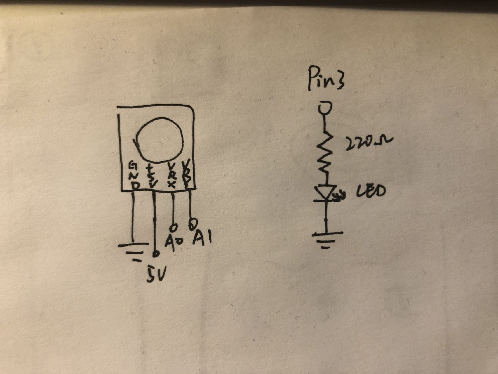

Talking to the web!

A joystick controls the motion of the ball on the canvas.
When the ball reaches the edges of the canvas, an LED will be lighted.
V = I * R
5V - 1.8V = 20mA * R
3.2V = 0.02A * R
R = 160Ω
Therefore, resistance cannot be smaller than 160Ω. 220Ω resistor works fine!

A GIF showing the operation of the circuit!
The code that makes this work:
Arduino code:
void setup() {
Serial.begin(9600); // Initialize the serial
pinMode(3, OUTPUT); // Set up the LED output
}
void loop() {
int s1 = analogRead(A0); // read the x-value of joystick
int s2 = analogRead(A1); // read the y-value of joystick
// turn the x and y value into a pair, and send it to serial
Serial.print("[");
Serial.print(s1);
Serial.print(",");
Serial.print(s2);
Serial.println("]");
if (Serial.available() > 0) { // when receiving serial data from the web
int ledstate = Serial.read(); // read the serial data
if (ledstate == 1) { // if the data is one
digitalWrite(3, HIGH); // light the LED
} else { // if it is not one
digitalWrite(3, LOW); // dim the LED
}
}
delay(100); // delay for 0.1 seconds
}
p5.js code:
var serial; // variable to hold an instance of the serialport library
var portName = 'COM5'; //set the port
var dataarray = []; //some data coming in over serial!
var xPos = 0;
function setup() {
serial = new p5.SerialPort(); // make a new instance of the serialport library
serial.on('list', printList); // set a callback function for the serialport list event
serial.on('connected', serverConnected); // callback for connecting to the server
serial.on('open', portOpen); // callback for the port opening
serial.on('data', serialEvent); // callback for when new data arrives
serial.on('error', serialError); // callback for errors
serial.on('close', portClose); // callback for the port closing
serial.list(); // list the serial ports
serial.open(portName); // open a serial port
createCanvas(1200, 800);
background(0x08, 0x16, 0x40);
}
// get the list of ports:
function printList(portList) {
// portList is an array of serial port names
for (var i = 0; i < portList.length; i++) {
// Display the list the console:
print(i + " " + portList[i]);
}
}
function serverConnected() {
print('connected to server.');
}
function portOpen() {
print('the serial port opened.')
}
function serialError(err) {
print('Something went wrong with the serial port. ' + err);
}
function portClose() {
print('The serial port closed.');
}
function serialEvent() {
if (serial.available()) { // if there is serial from arduino
var datastring = serial.readLine(); // read in serial
var newarray;
try {
newarray = JSON.parse(datastring); // parse as a JSON stream
if (typeof newarray == 'object') {
dataarray = newarray;
}
console.log("got back " + datastring);
} catch(err) {
// got something that's not a json
}
}
}
function graphData(newData) {
// map the range of the input to the window height:
var yPos = map(newData, 0, 1023, 0, height);
// draw the line
line(xPos, height, xPos, height - yPos);
// at the edge of the screen, go back to the beginning:
if (xPos >= width) {
xPos = 0;
// clear the screen by resetting the background:
background(0x08, 0x16, 0x40);
} else {
// pass
}
}
function drawSphere(x, y) {
// clear the screen by resetting the background:
background(0x08, 0x16, 0x40);
let diameter = 40;
let light = 0;
let xPos = map(x, 0, 1023, 0, width); // Map joystick x value to the sphere's x value
let yPos = map(y, 0, 1023, 0, height); // Map joystick y value to the sphere's y value
circle(xPos, yPos, diameter); // draw the sphere
if (xPos < 20 || yPos < 20 || xPos > width-20 || yPos > height-20) { // if the sphere is close to edges
light = 1; // set a "light it up" signal
}
serial.write(light); // send the signal to serial
}
function draw() {
let x = dataarray[0];
let y = dataarray[1];
drawSphere(x, y);
}